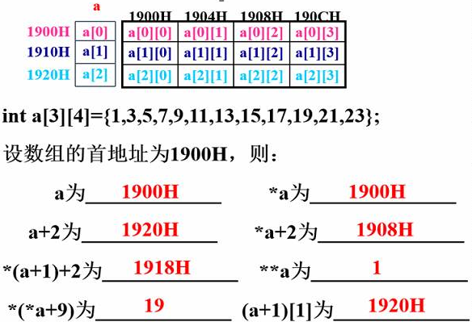

指针是用来存储地址的变量。

a：代表的是首行地址；
*a：代表的是首元素地址；
**a：首元素；
a+1：第二行地址；
*a+2：首先*a是首元素地址，在首元素地址上+2，就是第3个元素的地址；
（a+1)[1]：首先a+1是第二行地址，在第二行地址上增加[ ]取址符里面1个单位(跟a+1所处的单位相等)的地址，就等于第三行的地址。
int *a[5];
int (*a_p)[5]; 注意：因为[ ]运算符比*运算符的优先级高，数组指针定位为指针，那么它首先得是个指针，所以()运算符 - (*a_p)先说明它是一个指针，指向一个一维数组。